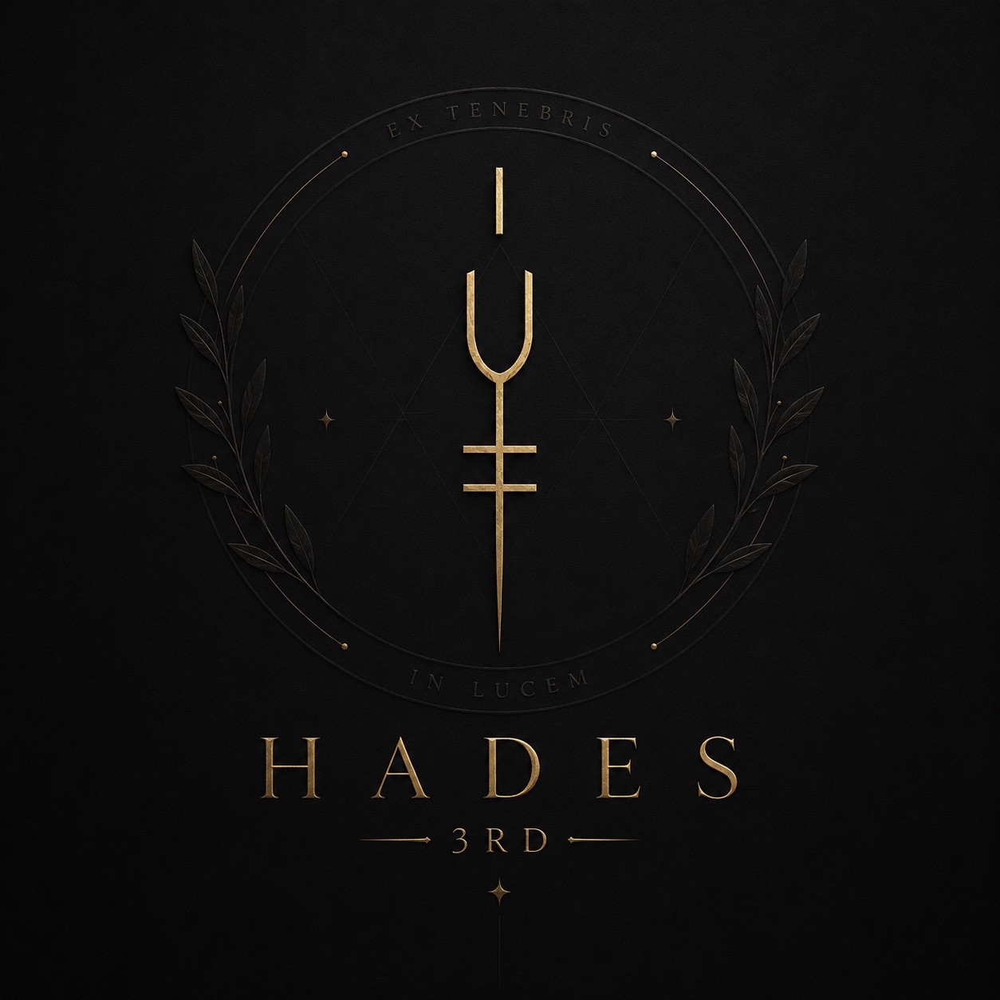

HADES
The universe / the realm. The enduring creative umbrella for stories, film, design and systems.
AN INDEPENDENT CREATIVE UNIVERSE
HADES is the world. HADES THE THIRD is its maker and current ruler — an original creative narrative expressed through cinematic craft, storytelling and independent tools.
PUBLIC EDITION · SITE DESIGN IN REVIEW

01 / ARCHITECTURE
The name defines an ecosystem of original work, not a template that erases the identity of each project.
The universe / the realm. The enduring creative umbrella for stories, film, design and systems.
The maker / the ruler. The creator identity within this realm. The ‘third’ is a personal mythic sequence: Greek, Roman, then its present author — not a historical claim.
Their own identities. Products such as SkyVision keep their own names and visual systems. A permitted “by HADES 3rd” credit remains subtle and secondary.
02 / PRACTICE
A selective view of the disciplines behind the work.
Direction, visual storytelling, timing and production craft.
Narrative structures, fictional systems and connected worlds.
Practical tools, interfaces and AI-assisted production workflows.
03 / IDENTITY
Classic and Modern share the same identity. The original files below have not been redrawn, recolored or traced.
The ceremonial emblem, reproduced from its original owner-supplied file. Other finishes and typography remain proposals.
.png)
An original isolated mark with its source margins preserved. It is a reference image, not a newly created vector identity.
Vermilion is approved. Other site colors, fonts and layouts are working presentation choices, not approved brand standards.
04 / SELECTED PUBLIC REPOSITORIES
These links lead to public repositories. Their status and reuse conditions are governed by each repository; a public link does not imply a finished commercial release.
Open-source knowledge and agentic systems
Nonlinear ideas and connected thinking
Digital writing and analog-inspired interaction
An independent product identity and public source
05 / PUBLIC DOWNLOADS
Additional specimens and guides; browse the library for the full collection.
Light Gallery · A4 crop and print / PUBLIC REVIEW
Editable A4, crop guidance and 50 mm calibration · فارسیBookmark Gift Bands · two editable A4 SVG sheets EN/FA · PUBLIC REVIEW
Only selected public-facing reference assets and facts appear here. Private strategy, working contracts, unapproved review boards and unpublished material are excluded.
Original-logo scale preflight (REVIEW) — editable HTML, A4 print and JSON
Creator recognition evidence cards · separate award and jury templates · REVIEW — editable HTML, SVG, JSON and A4 print. No unverified official award details.
Unaltered JPEG source of the Classic emblem.
Unaltered PNG source with original margins.
A short public-readable description of the universe.
توضیح فارسی دربارهٔ ساختار جهان برند.
Machine-readable approved accent and status facts.
No production SVG, editable master, contract or unapproved artwork is offered for download. Reference use only. These downloadable originals are not permission to redraw the mark, claim affiliation, or treat proposed design choices as approved.
05A / SURFACE LIBRARY
Architectural Arc 01 — a micro-line repeating background. Original source preserved, no repeated logo. The owner has made these review assets public; final design approval remains separate.
Very subtle geometry with rare vermilion. Reference asset, not an official logo or a brand master.
View and download SVG / PNG / PSD05B / EDITABLE BRAND MATERIALS
A quiet two-sided card, built from the original symbol with a transparent application layer. Editable SVG and layered PSD; still REVIEW, not final print artwork.
Open card preview and download SVG / PNG / PSD05C / EDITABLE STATIONERY
Two expressions of one quiet A4 layout, using source-preserved imagery, fine engraved arcs and editable type. PNG and layered PSD provided as REVIEW working assets.
Explore and download A4 SVG / PNG / PSD05C / MOTION TITLES · REVIEW
FA/EN transparent lower-third layouts for 16:9 and 9:16 footage; no new mark.
Open lower-third editor05D / EDITABLE ASSET LIBRARY
Stationery, social templates, web graphics, patterns and identity resources — categorized with SVG, PNG and layered PSD working downloads. All new designs clearly marked REVIEW.
Browse the complete library Logo usage guide · REVIEW06 / CONTACT & CHANNELS
Explore public code and published channels, or reach the creator through the established public profiles.
HADES / REVIEW
New downloadable Architectural Strata background sources in 16:9, 9:16 and 1:1. View the REVIEW collection · Asset library · Original logo guide
HADES / REVIEW
Contrast Studio: editable bilingual placement tests for existing architectural backgrounds, 3 safe-field vector overlays, and unmodified original logo on a separate dark plate. Open studio · Library · Original logo guide
PUBLIC REVIEW · Quiet Courts / three editable architectural artboards
Open SVG downloads · 16:9 / 9:16 / 1:1 · فارسی · Neutrals proposed; #EF4B32 is the only approved hue